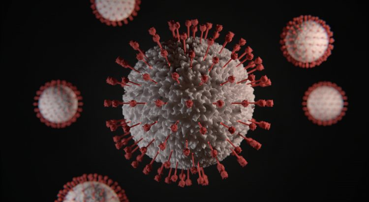
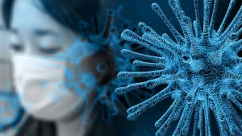
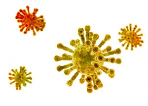
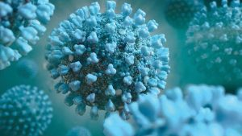

Virus – Wanted Dead or Alive!
Scientists, Bill Gates, and even screenwriters have predicted the current pandemic which is ravaging the world.At the beginning of the first episode of the 2015 comedy television series, 'The Last Man on Earth,' the subtitle reads '2020 A Year After the Virus.'A wacky story about the last man on Earth, although it turns out he wasn’t the last man but follows a small group of people as they navigate a strange post-virus world; no food production, no electricity, and many times – no sanity.Bill Gates, during a speech in 2015 warned that the next event that could kill up to 10 million people on Earth wouldn’t be a war, but rather a pandemic caused by a virus.Over the last decade, many scientists have warned us about a possible catastrophic pandemic, the world’s lack of preparation, and our inability to contain an extremely infectious virus.All warnings were largely ignored, resulting in our current world situation that features the highly contagious coronavirus (SARS-CoV-2), and the resulting disease called Covid 19.
Throughout human history, nothing has killed and destroyed more human lives than viruses.The amount of death, grief, and despair is almost hard to imagine.Many historians trace the fall of the Roman Empire to the Antonine Plague, with evidence strongly suggesting the disease was the smallpox virus along with the measles virus mixed in for additional horror.There was even evidence of the smallpox rash found on 3000-year-old Egyptian mummies and as far back as 10,000BC.This 12,000-year-old dreadful pathogen spread with such incredible speed because it was an airborne virus, much like Covid 19, and had an extremely high 30% mortality rate.(Note: Covid 19 still has not been scientifically confirmed as a true airborne disease).
During the 16th, 17th, and 18th centuries, the smallpox virus killed or affected approximately 80% of the world’s population, not to mention hundreds of millions more during the 19th and 20th centuries.Surprisingly, this carnage continued after a first-generation smallpox vaccine was introduced around 1800 by the British surgeon and physician, Edward Jenner.His discovery was the first-ever vaccination against infectious disease and it took about 180 years with 2nd and 3rd vaccine generations before the smallpox virus was finally eliminated from Planet Earth in 1977.It was the first and the only major infectious disease to have ever been eradicated.Unfortunately, in general, vaccines for other viral types have not proved as successful.The standard flu continues to affect the world year after year even with a flu vaccine.The flu virus is constantly changing form requiring yearly vaccine modifications, yet worldwide influenza epidemics continue to kill between 250,000 and 500,000 annually.
If one views history in totality, it sure looks like all life on our planet is at war with the viral parasites.And if numbers mean anything, the parasites appear to be winning, as they represent the most common biological entity on Planet Earth.It is conservatively estimated that there are 10(to the 31st power) viruses throughout our ecosphere.That number would be a 10 followed by 31 zeros.If stacked on top of each other that viral tower would extend almost 200,000 light-years.(One light-year is equal to approximately 6 trillion miles) If you ever felt like you were possessed by 'something' while you had a bad case of the flu, you would likely have at least 100 trillion viruses reproduced in your body after just a few days of infection.No wonder our immune systems have such a tough battle in regards to fighting off a viral attack.
No life is spared, as viruses infect everything from one-cell organisms to the most complex creatures on the planet.Millions of viruses are harmless, but many become lethal to their hosts.Certain forms of life have learned to adapt to exist, forming a balance or equilibrium.Other forms of life have developed robust immune systems, while science has had to develop vaccines to help man coexist.Once the viral contagions are recognized by modern medicine, vaccines must be developed to avoid a greatly diminished population.A deadly virus emerges and scientists react in haste to find a vaccine as quickly as possible to avoid another human catastrophe.The human species continues to play defense in this endless viral attack.The world’s scientific community has to come together to find the common thread which would eradicate the worldwide viral threat to mankind.Supercomputers, as well as recently developed knowledge about Covid 19 and other viral invaders, make this bold statement a possibility for the first time in history.There should be no limit to the world’s financial investment or desire to make this become a reality.It must become the next Manhattan Project.A project to eliminate this viral war for us and future generations.The research into Covid 19 may have jump-started this process with the worldwide scientific community taking on a massive effort.
Standing in the way, of course, is the virus itself.The viral ability to constantly mutate, change its overall structural design, and 'devise' ways to combat existing immune systems borders on sci-fi nightmare scenarios.Since they cannot store or produce energy, they can only exist by invading a host cell and using its biological mechanisms to replicate, thus becoming the ultimate parasite.Outside of the host cell, if they can’t invade another host cell, they will eventually break down structurally and will pose no further threat.Star Trek fans can appreciate this theme from many episodes.One story, 'The Borg,' is about artificial intelligence going completely rogue.They set out to assimilate and destroy all-natural biological life in the universe.Living intelligent beings are captured, civilizations destroyed, only to be connected to 'The Borg' collective to gain further knowledge to learn how to infect and destroy other civilizations.Their goal is 'achieving perfection.'Thankfully, the crew of the Starship Enterprise learns how to play 'The Borg' at their own game, by assimilating and adapting.
Since there is no fossil record of viruses given their microscopic size, it is impossible to see a track record of when the virus entered the world stage.Amazingly, they can be found in the genetic code of living entities.In human beings, it has been estimated that approximately 8% of the human genetic code includes sequences that originally came from viruses, and even some researchers contend that the cell nucleus has viral origins.
There is continuing debate over which came first; the virus, or the living cell.The virus-first theory says that the virus evolved before breaking off to form cells that eventually were able to store energy, replicate on their own, and become alive.The 'non-living' structures continued, forming a parasite foundation that allows them to replicate once re-entering and using the energy of living cells.The escape hypothesis says that the virus came after living cells with genetic material breaking away and forming a protective protein coat allowing for replication once it re-invades a living cell.And finally, there is the theory that viruses are simply, just remnants of cellular organisms.In any case, scientists believe this process may have initiated around 1.5 billion years ago.
In evolutionary terms, the virus may have played an important role by transferring genes between species and increasing diversity.This allowed life to adapt to the serious environmental challenges during prehistoric Earth.In other words, they help the 'non-living' and the living to continue to exist under severe early Earth environmental conditions.Some could say viruses evolved from living back to 'non-living' by a natural selection method of taking the easy way out, becoming the ultimate 'freeloader' in the process.
The overall basic design of the virus is incredibly simple, yet their structural geometric variations of the basic design are endless.They don’t contain cells, just genetic material, either single-strand RNA or double-strand DNA is surrounded by a coat of protein called the capsid.The RNA versions are simpler and can mutate at faster rates, while the DNA viruses contain more information and remain more stable with less mutating.The DNA versions, with their additional genetic information, are more like predators that can 'recognize' and attack.RNA viruses are more of a natural selection type.If at first, you don’t succeed, mutate, and try again.
Unfortunately, the current coronavirus is an RNA type that can mutate quickly.Sometimes, particularly in animal viruses, the capsid is surrounded by a lipid layer that contains viral proteins forming what is called the viral envelope.The capsid and viral envelope play many roles in viral infection.They include entry into cells and the transfer of the genetic code material which initiates massive replication using specific enzymes as well as characteristics that can battle against the host’s immune retaliation.It is this viral envelope which adapts and mutates so that its basic design can then attach to certain receptors in host cells.In Covid 19, its structural geometric design enables it to attach to specific receptors in the human lung, sometimes causing a lethal immune reaction which includes a massive inflammation response by the human host.This specific attachment site is the reason for Covid 19’s high mortality rate, quickly establishing itself as a lethal respiratory disease.It is extraordinary how a geometric design of a microscopic entity can assist in its replication and affect so many lives in the process.
The sophisticated viral chemical interactions with the host cells, their defense 'intelligence', and a seemingly endless viral supply make the argument that the virus is a 'non-living' entity a very difficult conclusion.On their own, they lack the properties of living things, acting more like a seed than a rock.They have no energy metabolism, they do not grow, they produce no waste products, and they do not respond to stimuli or even outside criticism.A cold, hard entity of the dark side perhaps?When you look at the resulting death and destruction, it makes Darth Vader seem like a 'nice guy.'The case for a living virus can take on another 'sci-fi' observation as all life can be a collection of non-living things until a certain level of complexity is achieved.In the case of the virus, this complexity is achieved once it interacts with a host cell.They seem to have a built-in 'intelligence' apart from their genetic code which controls their mutations and host interactions.Or, is it all just chemical reactions, with the genetic codes and the ultimate engineering of natural selection thrown in for good measure.It all becomes very mysterious in the infinite scheme of things.
Currently, worldwide, there are 224 treatments and 145 vaccines in development in response to Covid 19.Most of the vaccines are attempting to fire up the human immune response for this specific virus, but there are also advanced investigations into the antiviral approach.It is this antiviral search where the future of life on Planet Earth may exist.The simplicity of the virus itself could be its final weakness.There are just a small number of things that all viruses have in common; their internal genetic viral codes are susceptible to destruction once the viral protein coat is removed or broken down and the virus replication process could be eliminated once key proteins or enzymes are interrupted or destroyed.This could simply be the right innocuous chemical or natural substance taken into the body as a deterrent, before or after the virus is acquired.In any case, it could quickly eradicate a new or old existing virus.HIV, MERS, all flu viruses, SARS-Cov-2 (Covid 19), or even the common cold would no longer exist.
Researchers must also continue to look at animals that are not affected by viruses, which would include the most prolific species – the bat.The bat is the primary carrier of the most dangerous viruses on the planet, including SARS-CoV-2, alias Covid 19.A bat’s immune system features high metabolism and high body temperatures from flying most of the time.They have a lightning-fast signaling molecule called interferon-alpha.When interferon-alpha molecules are secreted by the bat’s virus-infected cells, nearby cells go into a defensive antiviral state.And most importantly, their immune system includes cytokines, which are substances that fight off viruses before they can spread.
The problem in humans is that cytokines sometimes produce an extremely high inflammation response, causing the failure of organs in the human body.Lower levels in bats ensure a strong antiviral response limiting excessive or inappropriate virus-induced inflammation.The good news for bats is that this dampening of the inflammatory response allows them to coexist with viruses with no lethal effects.The bad news for humans is that since they don’t eliminate the virus they continue to exist within the bat becoming more virulent in the process, ready to be passed along to the human population, usually through an intermediate species.Bat researchers now estimate there could be as many as 10,000-15,000 undiscovered coronaviruses within the immense worldwide bat population, prompting even more concern for a strong overall antiviral offensive approach.The human race simply can’t continue to exist by reacting to one new virus after another with endless vaccine research.
Finally, researchers must continue to investigate natural remedies and their antiviral abilities.Elderberry, echinacea, and garlic to name just a few, have shown throughout history to have an ability to ward off viral infections.Scientific studies must persist to find the exact reason why these substances are successful or why they are not.Can we capitalize on their success to make the final jump to an antiviral approach which is effective 100% of the time for the human race?
One thing is certain – viruses will persist and will continue to affect all life on Planet Earth.The battle rages on and our lag time, defensive approach, is costing millions of lives in the process.It may continue to be a very long intensive research path, but eventually, an offensive attack could secure a safer future for the next generations.An approach where viral breakdown can be achieved, regardless of virus type and endless viral deviations.Throughout the globe, we have an incredible amount of time, energy, and scientific effort being spent on the current pandemic.After this disease is 'gone,' the scientific momentum must continue until the viral threat is finally eliminated.The endless mutations with their viral chemical variations make this a very daunting task, but the risk of doing nothing or continually waiting for the next vaccine is putting mankind in ultimate danger.Whether the virus is dead or alive is meaningless if the final result is human extinction.
[bsa_pro_ad_space id=4]
Share on Facebook Tweet Follow us
Posted On: 2020-07-02T00:00:00
Posted By: Michael C Richter







Content Date: 2020-07-02
Download Date: 2021-07-09
Document ID: L0C04E7N2